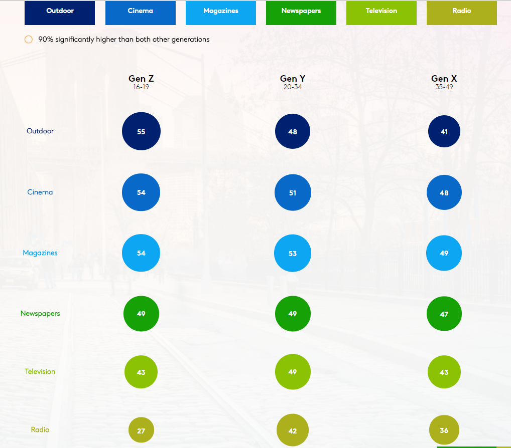

Atteindre et fidéliser les Z
Site Internet
Pour atteindre et fidéliser les Z il faut être présent sur Internet.
Les Gen Z se connectent partout : ordinateurs personnels, smartphones, montres, télévisions. L’arrivée des objets connectés va renforcer cette tendance à l’hyper connectivité.
La place du mobile dans les foyers grandit extrêmement vite. Cet essor de l’usage d’internet sur les mobiles et le m-commerce modifient grandement le commerce traditionnel. Les Gen Z ultra connecté et digital natives ne peuvent pas concevoir qu’une marque ne soit pas présente sur internet.
Internet et le digital ont amorcé un nouveau modèle de consommation et d’interaction. Grâce à sa rapidité et sa facilité d’accès, sa richesse informationnelle, visuelle et interactive, l’achat sur internet est plébiscité par les Gen Z.
Internet offre aux consommateurs la possibilité de s’informer et de prendre une décision avec l’aide de nombreux supports. Les avis consommateurs, les comparateurs de prix, les conseillers magasins en chat direct sur le site internet, sont autant d’outils que le Z utilise dans son acte d’achat.
L’importance de l’interaction et la communauté sur internet donne aux entreprises un accès à un public plus large. Le consommateur jouera gratuitement le rôle de garant pour une marque ou un produit s'il en est satisfait.
Un site internet se crée toutes les heures en France. L’intensité concurrentielle est très forte. Les stratégies digitales développées doivent être innovantes et efficaces pour se démarquer et atteindre les Z.
L’enjeu n’est plus d’être sur internet mais d’être vu sur internet, de gagner des parts de marché grâce à la stratégie digitale.
Plus de 70% des consommateurs se renseignent sur internet avant un acte d’achat et les Gen Z ne font d'accélérer cette tendance. La présence sur internet est devenue quasiment indispensable pour les entreprises. La présence sur internet peut être une simple vitrine, un espace de vente ou un lieu d’échange, de contact direct. En fonction des objectifs définis par l’entreprise les moyens et la communication à mettre en place seront différents.
Etre vu n’est que la première étape. Être compris en quelques secondes est primordial. Pour cela l’offre doit être claire et épurée.
La stratégie digitale est efficace lorsqu’elle est un élément à part entière de la stratégie du développement total. Elle doit donc être pensée de manière globale et répondre aux contraintes de l’entreprise. Si elle évolue indépendamment du reste, le Z remarquera un manque de cohérence et il se désintéressera de l’offre. La cohérence doit être maintenue entre tous les éléments de la stratégie On et Off line.
L'e Mailing réussi
Les Z ne sont pas encore tous touchés par les campagnes E mailing. Une fois arrivé au lycée puis à l’université ils auront besoin de mails.
Pour les cibler il faut être direct. Ils attendent des marques qu’elles prennent le devant et qu’elles leur exposent clairement leur offre, leur nouveautés et leurs conditions.
Il faut leur dédier des promotions car leur pouvoir d’achat et les produits recherchés ne sont pas identiques aux adultes.
Il faut personnaliser le mail en cherchant à connaître leurs goûts et habitudes. Les Z ne sont pas réceptifs aux mails génériques en mass.
Il est important de proposer des expériences et une valeur ajoutée.
Il faut optimiser la page pour le mobile. Le téléphone portable est le premier device utilisé par les Z; il est donc très probable que le mail soit lu via un mobile. Si le lien de redirection n’est pas optimisé pour le mobile, une large partie des Z quittera la page sans avoir lu le contenu. L’expérience utilisateur sera négative.
Etre présent est primordial mais il ne faut pas oublier les médias traditionnels pour autant. S’ils sont davantage présents sur Internet que les générations précédentes, ils sont toujours impactés par les médias traditionnels tels que l’affichage et la télévision. Ils sont réceptifs à recevoir de la publicité par ces biais.
Data vs vie privée
Pour les entreprises, internet permet de connaître les habitudes et les informations plus personnelles sur ses clients. Ces informations sont cruciales dans la mise en place d’une offre cohérente. Les entreprises disposent de nombreux outils pour traquer les recherches et le parcours d’achat en ligne. Ceux ci permettent de cibler les attentes du consommateur au plus juste, en se basant sur ses recherches internet et les sites visités.
Les Z sont également nés avec la publicité et l’explosion des datas. Leur vie privée a une grande valeur. Ils ne sont pas hostiles face à la publicité et aux marques. Mais ces dernières doivent être à la hauteur.
Ils sont prêts à remplir un formulaire détaillé ou donner accès à des datas personnelles à partir du moment ou l’échange de valeur est perçu comme équivalent.
Il s’agit d’une grande différence avec les générations précédentes qui interagissent avec méfiance avec les marques.
La Gen Z sera beaucoup moins indulgente face aux entreprises qui n’apportent pas de réelle valeur ajoutée à leur quotidien ou vie sociale.
Les Z sont prêts à fournir aux entreprises des datas sur les habitudes, leurs navigations individuelles ou leurs historiques d'achat mais uniquement lorsqu’ils sont d’accord. Ils estiment indispensable le fait de pouvoir rester anonyme et non traqué lorsqu’ils le souhaitent. Le succès des réseaux sociaux anonymes ou éphémères confirme la volonté des Z a ne pas laisser automatiquement des traces. Les Gen Z sont très préoccupés par les technologies qui menacent leur vie privée.
Ce double rapport avec les datas est assez délicat à maîtriser pour les entreprises, pourtant c’est un sujet majeur dans la fidélisation et l’attraction des Z.
La géolocalisation, par exemple, est appréciée lorsqu’elle apporte une valeur ajoutée au consommateur. Mais elle est perçue comme extrêmement intrusive lorsque l’usage n’est pas clairement relié à une offre ou un service.
Mobile first
L’expression "Mobile First" a été utilisé pour la première fois 2011 par Luke Wroblewski dans son livre Mobile First. Cela consiste à réfléchir au mobile en premier lors de la conception d'un site internet. Favoriser le mobile est une stratégie cohérente lorsqu’on cible les Z.
Les millennials ont découvert internet avec un ordinateur puis ont découvert les premiers smartphones peu performants. A la grande différence des Gen Z dont le premier point de contact avec internet s’est fait majoritairement via une tablette ou un smartphone. L’expression mobile first est également employée pour décrire ce rapport des Gen Z avec le mobile.
Les millennials considèrent que les formats disponibles sur un ordinateur sont plus complets et plus performants. Les Gen Z ne conçoivent pas qu’un contenu ne soit pas disponible et optimisé pour le mobile.
97% des mobinautes consultent internet tous les jours, alors que 88% des internautes consultent internet chaque jour.
Appliquer le concept du Mobile First vient avec des contraintes techniques.
Deux contraintes pèsent grandement dans la mise en place d’une stratégie mobile.
La première repose sur la taille du smartphone (en moyenne 80% plus petit qu’un ordinateur), la taille de l'écran restreint les possibilités et obligent les entreprises à penser complètement différemment leur arborescence.
Contrairement aux ordinateurs, les smartphones sont davantage utilisés hors wifi et hors du domicile. La connexion est un facteur déterminant car elle impactera le temps de chargement du contenu. La patience et le temps d’attention des Gen Z étant de plus en plus courte un temps de chargement rapide est une clef de réussite ou d’échec majeur pour un site. Lorsque l’on cible les Gen Z il faut également prendre en compte le device ainsi que le forfait utilisé, si le temps de chargement et le poids de la page nécessite une connection internet trop importante les Z risqueront encore plus de quitter la page avant d’avoir visionné le contenu.
Ces deux contraintes impliquent de supprimer tout contenu superflu et parasitant l’utilisation. Les fonctionnalités doivent être facilement identifiables. La difficulté est de proposer toutes les fonctionnalités indispensables en gardant une ergonomie optimisée pour mobile, ainsi que de créer des systèmes rapides et performants.
Les publicitaires n’ont pas encore trouvé un format efficace sur mobile. Les publicités restent gênantes, intrusives et peu vues.